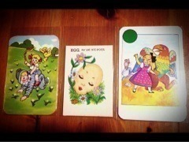

| 2012/12 07 Fri | 311回目*marika |

ツリーのてっぺん
地震すごかった...
みなさん、大丈夫ですか？
......
テスト終わった!!!
今まさに喜びのポーズをしています。
今日はね。
仲良しメンツで約束してたもんじゃを
食べましたよー！
やー最高。
もんじゃ、お好み焼き、焼きそば
全部食べました。食べすぎました

本当に、食べすぎました。
めっちゃしゃべったなあ
泣いたり笑ったりー♪
たくさんお話できてよかったー
本当おもしろい。笑いが絶えない。
またもんじゃ行くぞー！
その後吉祥寺で雑貨屋めぐり

＼購入品／

Pin's ups
ヴィンテージのゲームカード3枚
ここの雑貨屋さん
ずっと昔からすきで...
宝箱みたいに全部が最高にかわいい！
......
テスト終わったらやることリスト
・もんじゃ食べる！...達成
今からやること。
・掃除
早く終わったら
友達に借りてる漫画じっくり読んで、
そのあと図工しよう。
よし←
**********
 まりかのは
まりかのは
どのDVDに入ってるん(・・?)
 Type-Bです！
テストどうだった？できた？
Type-Bです！
テストどうだった？できた？
あ、できなかったのか(笑)
んま！...

やっぱり文系だなあー
かわいい曲とかっこいい曲
どっちが好きですか？
ダンス激しいのも好きだけど、
今はかわいいのが好きかな。
人見知りとか、、握手会平気？(笑)
そこで人見知り発揮しません！
pv作るときはまりかも入って
一緒に作るの？？
それとも監督さんだけ？
もちろん撮影は一緒に！
内容は監督さん、スタッフさんです。
明日を考えないってどう思う？
明日を考えないときってあるの？
私は無意識に考えてしまいます。
明日は何しようかなって。
考えてる時間が、わくわくしてて
いちばん楽しいんじゃないかな。
もし、明日が嫌な日だったら
嫌な日が終わったらのことを
考えます。
ちなみに伊藤ちゃんずの相方は
センターフライだったけど
まりっかは取れるん？ｗ
無理です！どぎゃん！
今回のまりかさんの個人PVは、
苦手克服ができたか?という観点
ではなく純粋に楽しんだほうが
よさそう。?
それは...みなさんの自由で！
でも、楽しんで見た方が、
楽しく見れる...はず。
**********
いつかのホテルで！
2ショット失敗写真
ひめかが送ってくれました笑
...ひめか
ちょうど写ってないのよ; ;
ふたりでちゃんと写った写真、
いつかひめかが載せてくれるかな

では、おやすみなさい！
まりか
コメント(159)
2012/12/07 21:12